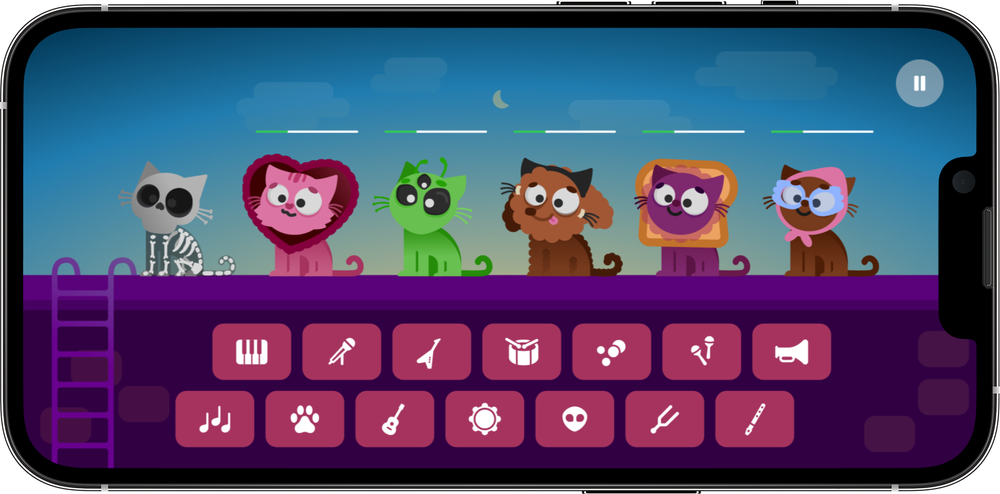
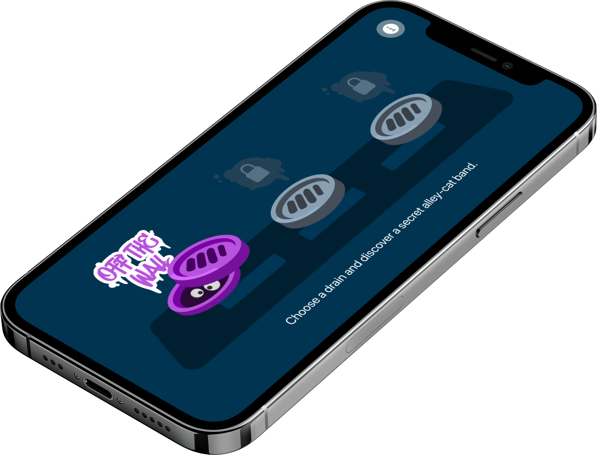

Interactive music playground
4
sound families in each session
8
performers in every mix
3
special combo scenes per pack
Build instant tracks with a crew of style-heavy cats.
Meowsic turns music-making into a visual game. Players pick a sound pack, drop beats, melodies, effects and voices onto performers, then shape a mix that feels polished from the very first combination.
Gameplay preview


Character cast
The full lineup gives the game instant charm, variety and replay value.
Every performer carries a distinct silhouette and personality, making each sound choice feel visual as well as musical.

Concept
A clean landing page that explains the game fast without making it feel complicated.
Instant creation
Players test sounds through direct visual actions instead of complex menus or technical controls.
Visual feedback
Every active layer changes the atmosphere, giving the experience motion, rhythm and personality.
Natural replay value
Different packs, tones and combinations keep each session short, fresh and easy to repeat.
User flow
Easy to understand, fast to test and satisfying to loop.
Pick a pack
The player enters a ready-made sonic world with its own visual mood, tone and rhythm.
Place the sounds
Beats, bass, melodies and voices are assigned to cat performers to shape the mix in real time.
Suggested packs
Meowsic can expand through moods, styles and visual worlds.
Downtown Purr
Dry grooves, soft choruses and neon texture for relaxed mixes with a little bite.
Sunbeam Scratch
Lighter layers, catchy refrains and warmer tones for a more playful session.
Velvet Whiskers
Tape texture, soft bass and tiny room noises for a more intimate mix direction.
KEY POINTS THAT SELL THE CONCEPT FAST
KEY POINTS THAT SELL THE CONCEPT FAST
KEY POINTS THAT SELL THE CONCEPT FAST
KEY POINTS THAT SELL THE CONCEPT FAST
KEY POINTS THAT SELL THE CONCEPT FAST
KEY POINTS THAT SELL THE CONCEPT FAST
Dynamic message
Key points that sell the concept fast.
Quick answers
The core pitch stays simple even without overexplaining the product.
What is the core idea?
Turn music mixing into an accessible visual game where each character represents a musical role.
Does it need to be complex?
No. A focused landing page and a clear game loop are enough to communicate the value quickly.
What makes it feel alive?
The mix of characters, layered loops, motion and discovery gives each pack its own energy.
Ready to prototype
Back to top